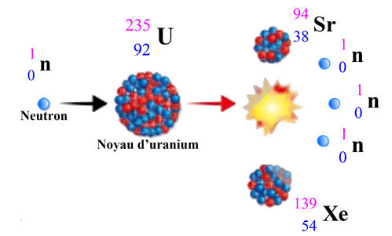
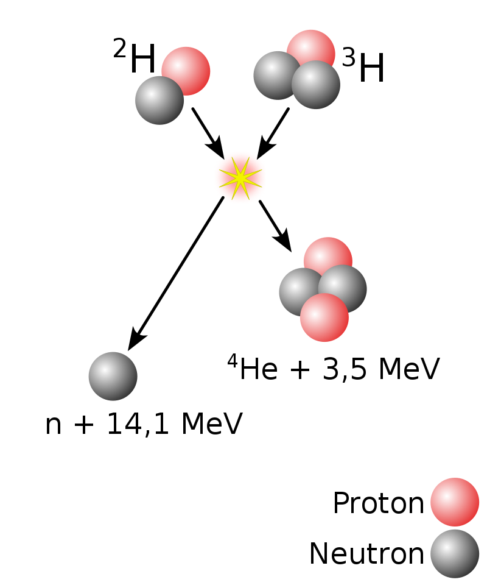

-Les Isotopes sont des éléments (atomes, ions...) qui ont une particularité. En effet, ils possèdent le même nombre de protons mais un nombre de neutrons différent !
Pour exemple l'Oxygène:

Avec comme exemple:

Où encore:

-C'est le cas pour les noyaux atomiques utilisés dans les centrales nucléaires,l'Uranium. L'uranium notamment possède beaucoup d'isotopes comme les plus connues: l'uranium 235 et 238, mais aussi l'uranium 233, 234 ,236...
Après la découverte du phénomène sur la fission spontanée(voir deuxième description), on inventera l'écriture symbolique de la fission nucléaire:
Ce qui donne cette réaction:
 Source Wikipédia
Source Wikipédia
De même pour la fusion:
 Source WikipédiaLa réaction: